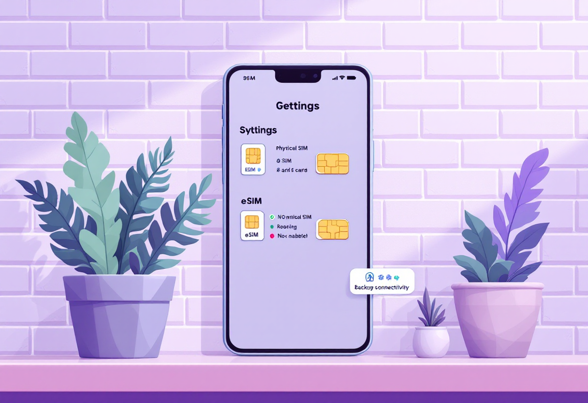
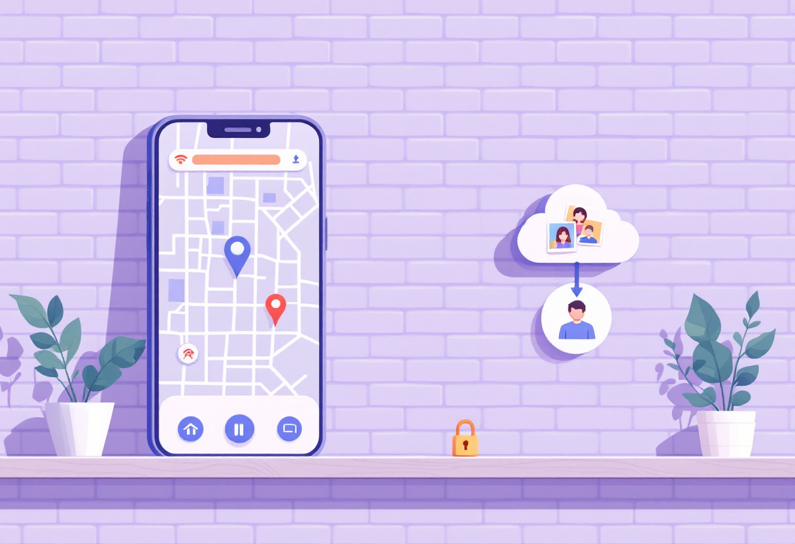
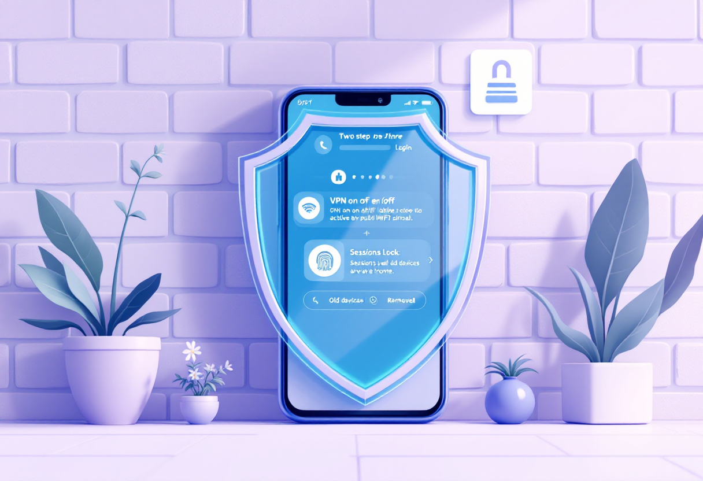

Як підготувати телефон до подорожі
eSIM, офлайн-карти, резервні копії та захист акаунтів – щоб телефон не підвів у найневідповідніший момент.

Зв'язок: eSIM і роумінг
Телефон у подорожі – це квитки, карти, зв'язок і банкінг. Якщо він не налаштований, проблеми з'являються в найневідповідніший момент.
Перед поїздкою перевір:
- чи підтримує твій телефон eSIM – це дозволяє підключити місцевий номер без фізичної SIM-картки
- умови роумінгу у твого оператора – це може бути дешевше, ніж здається
- чи краще купити місцеву SIM або eSIM для країни подорожі – порівняй ціни заздалегідь
- чи є у тебе резервний спосіб зв'язку на випадок, якщо з основною карткою виникнуть проблеми

Офлайн-карти і резервні копії
Офлайн-карти
Обов'язково завантаж карти заздалегідь – вони допоможуть, якщо не буде інтернету.
- Завантаж офлайн-карту потрібного міста або регіону.
- Збережи маршрути громадського транспорту та важливі точки: готель, вокзал, аеропорт.
- Google Maps, Maps.me або OsmAnd – хороші варіанти для офлайн-навігації.
Резервні копії
- Зроби backup фото і контактів перед поїздкою.
- Увімкни синхронізацію з хмарою – щоб не втратити дані, якщо щось станеться з телефоном.
- Переконайся, що знаєш пароль від облікового запису – відновити доступ без нього складно.

Захист акаунтів
У подорожі телефон частіше використовується в публічних мережах – це підвищує ризики.
- Увімкни двофакторну авторизацію на всіх важливих акаунтах.
- Перевір активні пристрої у своїх акаунтах і завершай зайві сесії.
- Уникай підключення до відкритих Wi-Fi мереж без VPN.
- Не залишай телефон без нагляду в публічних місцях.
- Переконайся, що на телефоні є блокування екрана – PIN, відбиток або Face ID.
Додаткова підготовка
Кілька дрібниць, які рятують у незручні моменти.
- Візьми зарядний пристрій і павербанк – розетки є не завжди.
- Перевір, чи підходить твій зарядний пристрій до розеток країни – можливо, потрібен перехідник.
- Збережи електронні квитки в офлайн-режимі або у вигляді скріншотів.
- Зроби копії важливих документів у телефоні або хмарі – на випадок втрати оригіналів.
- Перевір, чи є в телефоні місце для фото і нових завантажень – звільни пам'ять заздалегідь.